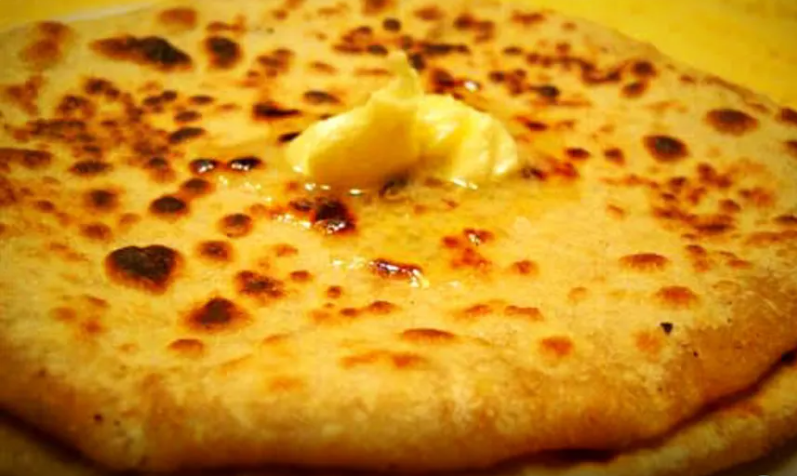

Aloo Paratha Recipe

Introduction
Aloo paratha holds a distinguished status as a beloved breakfast dish, particularly in the western, central, and northern regions of India.
These parathas feature unleavened dough enveloping a flavorful blend of mashed potatoes, skillfully rolled out and cooked on a hot tawa with a drizzle of butter or ghee.
The origins of parathas can be traced back to Peshawar, and from there, they proliferated across the northern territories of India.
This culinary tradition initially emerged as a nourishing morning meal, frequently savored during breakfast hours.
| Prep Time |
Cook Time |
Total Time |
Servings |
| 40 mins |
20 mins |
1 hr |
2 |
Recipe Of Aloo Paratha
| For dough |
| 2 cups of whole wheat flour |
| 1 tablespoon salt |
| 3 teaspoon oil |
| For Aloo stuffing |
| 3-4 Potatoes |
| 1 tablespoon Ginger Paste |
| 1 Green chilli chopped |
| 2 tablespoon coriander leaves finely chopped |
| 1/2 teaspoon garam masala powder |
| 1 onion, diced |
| 1/2 tablespoon cumin powder |
| gooseberry sized tamarind |
Directions
Making Dough For Paratha
In a spacious bowl, blend 2 cups of wheat flour with 1/2 teaspoon of salt, ensuring thorough mixing.
Gradually add water as necessary, initiating the kneading process.
Incorporate 2 tablespoons of oil into the mixture and knead it diligently until the dough achieves a smooth and soft texture.
Apply a light coating of oil to the surface of the dough.
Allow the dough to rest for a period of 20 minutes.
Aloo Stuffing for Paratha
Start by taking a large bowl.
Add 3 potatoes, 1 teaspoon of ginger paste, 2 chili peppers, 2 tablespoons of coriander, and 1/2 teaspoon of coriander seeds to the bowl.
Also, include 1/4 teaspoon of ajwain, 1 teaspoon of chili powder, 1/2 teaspoon of cumin powder, 1/2 teaspoon of garam masala, 3/4 teaspoon of aamchur (mango powder), and 1/2 teaspoon of salt to the bowl.
Thoroughly mix all these ingredients, ensuring they are well combined to create the aloo stuffing.
Making Aloo Paratha
After letting the dough rest for 20 minutes, give it a slight knead.
Pinch a portion of the dough to form a ball, and roll it out to about 4 inches in diameter.Place a ball-sized serving of the prepared aloo stuffing in the center of the rolled-out dough.
Begin pleating the edges of the dough, folding them toward the center, and then securely pinch off any excess dough.Sprinkle a bit of wheat flour on the dough and roll it slightly thicker.
On a hot tawa (griddle), position the rolled paratha and cook for approximately one minute.After the base is partially cooked (about a minute), flip the paratha.
Brush oil or ghee on the paratha and apply gentle pressure. Flip it again once or twice until both sides are thoroughly cooked.
Lastly, serve the hot aloo paratha with your choice of sauce, raita, or pickle.
Nutrition Facts
| Calories |
Fat |
Carbs |
Protein |
| 250 |
10g |
30g |
5g |